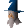

Watchtower wizard

| Config name | watchtower_wizard |
| NPC id | 872 |
| Combat level | hidden |
| Options | Talk-to |
| Wander range | 5 tiles from spawn |
| Area folder | area_yanille |
| Defined in | scripts/areas/area_yanille/configs/yanille.npc |
Watchtower wizard
The hat is a dead give away.
Show all 8 spawns on the world map → Open in knowledge graph →
Locations
| Area | Coordinates | Level | Count | Map |
|---|---|---|---|---|
| Rune Essence Mine | 2928, 4717 | 2 | 1 | view |
| Rune Essence Mine | 2933, 4716 | 2 | 1 | view |
| Yanille | 2544, 3112 | 2 | 1 | view |
| Yanille | 2544, 3117 | 2 | 1 | view |
| Yanille | 2549, 3112 | 2 | 1 | view |
| Yanille | 2549, 3116 | 2 | 1 | view |
| unlabelled | 2928, 4712 | 2 | 1 | view |
| unlabelled | 2933, 4712 | 2 | 1 | view |
Dialogue
Watchtower wizardGreetings, friend. I trust all is well with you? Yanille is safe at last!
Watchtower wizardHello again adventurer. Thanks again for your help in keeping us safe.
PlayerI lost the scroll you gave me.
Watchtower wizardHo, ho, ho! A comedian to the finish. There it is, in your backpack!
Watchtower wizardNever mind, have another...
PlayerThat's okay.
Watchtower wizardWe are always in your debt...
Watchtower wizardThe system is not activated yet. Throw the switch to start it.
Watchtower wizardHello again. Did the potion work?
PlayerIndeed it did! I wiped out those ogre shamans!
Watchtower wizardMagnificent! At last you've brought all the crystals.
Watchtower wizardNow the shield generator can be activated again. And, once again, Yanille will be safe from the threat of the ogres.
Watchtower wizardThrow the lever to activate the system...
PlayerI had another crystal but I lost it.
Watchtower wizardDissappointing, dissappointing.. Well there's not much I can do... You had better go back and search the area again.
PlayerI am looking for another crystal.
Watchtower wizardThe rock of the shaman is the key. I understand their power is linked to it in some way. You may need something heavy to crack this boulder...
PlayerI have found another crystal!
Watchtower wizardWonderful! Show it to me so I can confirm it's the real thing...
PlayerI am still working to rid us of the shamans...
Watchtower wizardMay you have success in your task.
Watchtower wizardAny more news?
PlayerI have made the potion.
Watchtower wizardThat's great news; let me infuse it with magic...
Watchtower wizardHere it is - a dangerous substance. I must remind you that this potion can only be used if your magic ability is high enough.
PlayerCan you tell me again what I need for the potion?
Watchtower wizardYes indeed, you need some guam leaves, jangerberries and ground bat bones.
Watchtower wizardThen the potion can be powered with magic and the ogre shaman can be destroyed.
PlayerI have found the cave of ogre shaman, but I cannot touch them!
Watchtower wizardThat is because of their magical powers. We must fight them with their own methods; do not speak to them! I suggest a potion...
Watchtower wizardCollect a guam leaf, add jangerberries, then mix in some ground bat bones. You must return it to me before you use it, so that I can empower it with my magic.
Watchtower wizardBe very careful how you mix it as it is extremely volatile. Mixing ingredients of this type in the wrong order can cause explosions!
Watchtower wizardI hope you've been brushing up Herblore and Magic? I must warn you, only experienced magicians can use the potion. It is too dangerous in the hands of the unskilled.
Watchtower wizardHello again. How do you fare?
PlayerIt goes well. I can now navigate the skavid caves.
Watchtower wizardThat is good news. Let me know if you find anything of interest.
PlayerI had a crystal, but I lost it!
Watchtower wizardOh no, well you had better go back there again then!
PlayerI am now ready for the shamans.
Watchtower wizardRemember all I told you, you must distract the guard somehow. The herbs with blue leaves and berries is what you are looking for.
Watchtower wizardThis herb is very poisonous however, handle it carefully. Also, be on your guard in that cave. Who knows what monsters may be in that awful place...
Watchtower wizardHow is the quest going?
PlayerI have worked out the guard's puzzle.
Watchtower wizardMy, my! A wordsmith as well as a hero.
PlayerI am still trying to navigate the skavid caves.
Watchtower wizardTake some illumination with you or else it will be dark.
PlayerI am trying to get into the shamans' cave.
Watchtower wizardYes, it will be well guarded. Hmmm, let me see...
Watchtower wizardAh yes, I gather some ogres are allergic to certain herbs... Now what was it? It had white berries and blue leaves.... I remember that!
Watchtower wizardYou should try looking through some of the caves...
PlayerIt is going well.
Watchtower wizardThat's good to hear. We are much closer to fixing the tower now.
Watchtower wizardHow are you doing?
PlayerSome of the city guards have set me a puzzle
Watchtower wizardUmmm, is that so? I can't help you there, I never was much good at puzzles.
PlayerCan you tell me more about the city?
Watchtower wizardYes indeed, this city is very ancient. It's not clear whether the ogres actually constructed it, or whether they took it over from another race.
Watchtower wizardWhat I can tell you is that the whole city is controlled by a group of ogre shamans.
PlayerOgre Shamans?
Watchtower wizardIndeed, these ogres have harnessed the black arts. They wield great power.
PlayerThey sounds nasty!
Watchtower wizardIndeed they are, but you must confront them to break the power of the ogres. They MUST be beaten!
PlayerBut I'm scared of those shamans!
Watchtower wizardScared? To get this far and to falter now... Perchance, you are not ready for the final challenge?
PlayerLeave it to me, I fear no ogre!
Watchtower wizardThat's the spirit! May your search prove fruitful.
Watchtower wizardHow are you doing with the ogres?
PlayerI have gained entry to the city!
Watchtower wizardAlready? Excellent!
PlayerI still can't navigate the skavid caves.
Watchtower wizardYou need a map of some kind... I bet one of the ogres has one.
PlayerOkay thanks, I'll go and find out.
Watchtower wizardAh, the warrior returns. Have you found a way into Gu'Tanoth yet?
PlayerI can't get past the guards.
Watchtower wizardWell, ogres dislike others apart from their own kind. What you need is some form of proof of friendship, something to trick them into believing you're their friend.
Watchtower wizardWhich shouldn't be too hard, considering their intelligence.
PlayerI have lost the relic you gave me.
Watchtower wizardHave you gone mad? I can see you have it with you!
Watchtower wizardWhat? Lost the relic? How careless! It's a good job I copied its design, then! You can take this copy instead - it's just as good.
PlayerI will find my way in, no problem.
Quests
Referenced in scripts
scripts/quests/quest_itwatchtower/scripts/quest_itwatchtower.rs2scripts/quests/quest_itwatchtower/scripts/watchtower_wizard.rs2